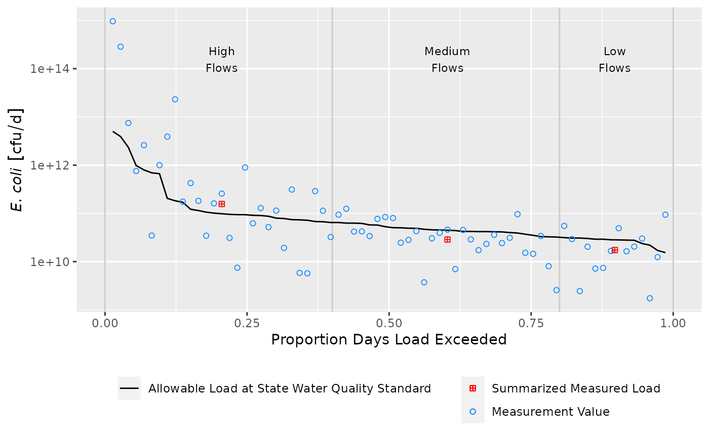

Creates a load duration curve visualization from the outputs of
calc_ldc and summ_ldc as a ggplot object.
draw_ldc(
.tbl_calc,
.tbl_summ,
y_lab = NULL,
ldc_legend_name = "Allowable Load at State Water Quality Standard",
measurement_name = "Measurement Value",
measurement_shape = 21,
measurement_color = "dodgerblue",
measurement_alpha = 1,
summary_name = "Summarized Measured Load",
summary_stat_shape = 12,
summary_stat_color = "red",
label_nudge_y = 0,
label_font_family = "Arial",
label_font_size = 3,
label_break = TRUE
)data frame object created by calc_ldc
data frame object created by summ_ldc
optional string for y-axis label name, will be appended with units automatically. default is NULL.
string, provides the name used for the allowable pollutant load line in the legend. required.
string, provides the name used for measured load values in the legend. required.
aesthetic value passed to the layer plotting
measured load values. defaults to 21.
aesthetic value passed to the layer plotting
measured load values. defaults to "dodgerblue".
aesthetic value passed to the layer plotting
measured load values. defaults to 1.
string, provides the name used for summary statistic values in the legend. required.
aesthetic value passed to the layer plotting
summary statistic values. defaults to 12.
aesthetic value passed to the layer plotting
summary statistic values. defaults to "red".
numeric value to vertically nudge flow category labels.
If a log10 transformed scale is being used, a log value is probably
appropriate for example log10(1000).
string specifying font family to use in flow category labels.
numeric value specifying font size to use in flow category labels.
logical, add line breaks to flow category labels. Labels will break at spaces.
ggplot object
# Basic example using built in Tres Palacios data
library(dplyr)
library(units)
library(ggplot2)
# Format data
install_unit("cfu")
df <- as_tibble(tres_palacios) %>%
## filter data so this run quicker
filter(!is.na(Indicator_Bacteria)) %>%
## flow must have units, here is is in cfs
mutate(Flow = set_units(Flow, "ft^3/s")) %>%
## pollutant concentration must have units
mutate(Indicator_Bacteria = set_units(Indicator_Bacteria, "cfu/100mL"))
# Calculate LDC
## specify the allowable concentration
allowable_concentration <- 126
## set the units
units(allowable_concentration) <- "cfu/100mL"
df_ldc <- calc_ldc(df,
Q = Flow,
C = Indicator_Bacteria,
allowable_concentration = allowable_concentration)
# Summarize LDC
df_sum <- summ_ldc(df_ldc,
Q = Flow,
C = Indicator_Bacteria,
Exceedance = P_Exceedance,
groups = Flow_Category,
method = "geomean")
# Create ggplot object
draw_ldc(df_ldc,
df_sum,
y_lab = expression(paste(italic("E. coli"))),
label_nudge_y = log10(1000)) +
scale_y_log10() +
theme(legend.title = element_blank(),
legend.direction = "vertical",
legend.position = "bottom")

## cleanup
remove_unit("cfu")